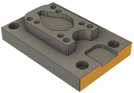

<div id="alignment_plane3"><p>CAD モデルをパーツに位置合わせするために必要な 3 番目の平面。</p>
<p>キャンバスで、CAD モデルの平坦面をクリックします。[平面 1]および[平面 2]と平行でない面を選択します。</p>
<table class="tipTable" cellspacing="10">
<tr>
<td><center></center></td>
</tr><tr>
<td><center></center></td>
</tr></table>
</div>